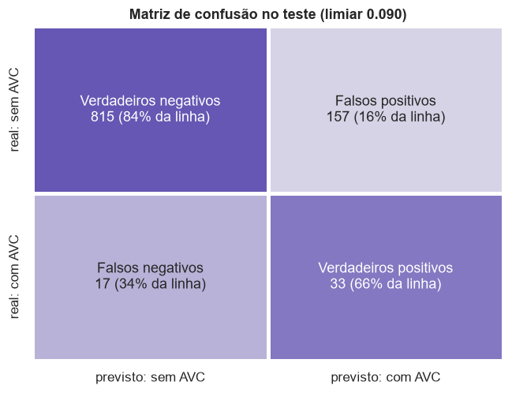
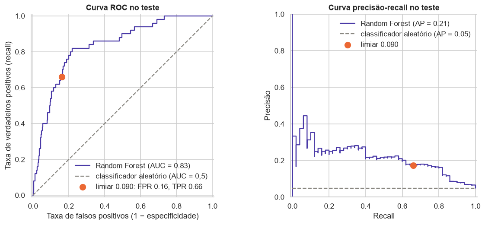

Avaliação no teste¶
Seção 2 da APS2. O código completo está no notebook 04. O conjunto de teste (1.022 pacientes, 50 casos de AVC), separado na tarefa 1.7 da APS1, é usado aqui pela primeira vez, e nenhuma decisão de modelagem é tomada com ele: modelo, hiperparâmetros e limiar já estavam fixos.
Modelo avaliado: a Random Forest final da página Modelagem, com o pipeline novo e limiar 0,090.
1. Métricas¶
| Accuracy | Precision | Recall | F1-score | ROC-AUC | PR-AUC | |
|---|---|---|---|---|---|---|
| Dummy (sempre "sem AVC") | 0,951 | 0,000 | 0,000 | 0,000 | 0,500 | 0,049 |
| Random Forest, limiar padrão 0,5 | 0,951 | 0,000 | 0,000 | 0,000 | 0,835 | 0,214 |
| Random Forest, limiar 0,090 (modelo final) | 0,830 | 0,174 | 0,660 | 0,275 | 0,835 | 0,214 |
| Regressão logística ajustada (só referência) | — | — | — | — | 0,838 | 0,225 |
- A acurácia engana: o Dummy e a floresta com limiar 0,5 acertam 95,1% e não encontram nenhum AVC. O modelo final tem acurácia menor justamente porque sinaliza pacientes.
- Recall de 0,66: encontra 33 dos 50 AVCs.
- Precisão de 0,17: cerca de 1 em cada 6 alertas é AVC. É 3,6 vezes a prevalência: o grupo sinalizado tem risco 3,6 vezes maior que o paciente médio.
- No teste, a regressão logística fica ligeiramente à frente da floresta (PR-AUC 0,225 contra 0,214). Ela entra só como referência, com as métricas que não dependem de limiar: trocar de modelo agora seria escolher modelo olhando o teste.
Incerteza¶
Intervalos de confiança de 95% por bootstrap (2.000 reamostragens do teste):
| Métrica | No teste | IC 95% |
|---|---|---|
| Recall | 0,660 | 0,529 a 0,787 |
| Precision | 0,174 | 0,121 a 0,228 |
| F1-score | 0,275 | 0,200 a 0,348 |
| ROC-AUC | 0,835 | 0,776 a 0,889 |
| PR-AUC | 0,214 | 0,142 a 0,331 |
| PR-AUC: floresta − logística | −0,012 | −0,061 a +0,036 |
- Com só 50 casos de AVC, cada caso a mais ou a menos muda o recall em 2 pontos. Para validar modelos de predição clínica recomenda-se pelo menos 100 eventos, de preferência 200 (Collins et al., 2016).
- Floresta e logística empatam no teste: o intervalo da diferença contém o zero com folga, assim como a validação cruzada já mostrava uma vantagem menor que um desvio.
- O modelo é claramente melhor que o acaso: os intervalos de ROC-AUC e PR-AUC ficam longe de 0,5 e de 0,049.
Teste contra validação cruzada¶
| PR-AUC validação cruzada | PR-AUC teste | ROC-AUC validação cruzada | ROC-AUC teste | |
|---|---|---|---|---|
| Random Forest (modelo final) | 0,269 | 0,214 | 0,853 | 0,835 |
| Regressão logística ajustada | 0,225 | 0,225 | 0,851 | 0,838 |
As duas colunas de validação vêm das mesmas dobras novas do notebook 03. A PR-AUC da floresta cai 0,055 no teste, enquanto a da logística fica igual. Parte é variação amostral, mas a causa principal é o indicador de IMC ausente, cujo sinal quase some no teste (22,7% de AVC entre quem não tem IMC no treino, 7,9% no teste); a Discussão crítica detalha. Recall e precisão ficaram perto do previsto no treino (0,67 e 0,18): o limiar se transferiu bem.
2. Matriz de confusão¶

| Previsto: sem AVC | Previsto: com AVC | |
|---|---|---|
| Real: sem AVC | 815 verdadeiros negativos | 157 falsos positivos |
| Real: com AVC | 17 falsos negativos | 33 verdadeiros positivos |
Quem são os erros:
| Grupo | Pacientes | Idade mediana | Glicose mediana | Hipertensão | Doença cardíaca | IMC ausente |
|---|---|---|---|---|---|---|
| Verdadeiros positivos | 33 | 78 | 133 | 33% | 33% | 6% |
| Falsos negativos | 17 | 57 | 93 | 6% | 0% | 6% |
| Falsos positivos | 157 | 74 | 151 | 40% | 14% | 14% |
| Verdadeiros negativos | 815 | 38 | 89 | 4% | 1% | 2% |
- Falsos negativos são AVCs atípicos: mais jovens e quase sem fatores de risco registrados. As features disponíveis não os distinguem de pacientes saudáveis.
- Falsos positivos têm o perfil de risco dos verdadeiros positivos e são o grupo com mais IMC ausente (14%): o indicador empurra pacientes sem AVC para cima do limiar. A maioria é de pacientes de alto risco que não tiveram AVC, ou ainda não tiveram; em triagem, é o erro aceitável.
- Custo prático: para encontrar 33 dos 50 casos, o modelo sinaliza 190 pacientes (19% do teste), quase 6 alertas por caso verdadeiro.
3. Curva ROC¶

ROC-AUC = 0,835: em 83,5% dos pares (paciente com AVC, paciente sem AVC), o paciente com AVC recebe probabilidade maior. Com 20% de falsos positivos a curva já chega a ~80% de recall, e o ponto de operação (16% de falsos positivos, 66% de recall, em laranja) fica nesse trecho de melhor custo-benefício.
A curva precisão-recall mostra o outro lado: a precisão fica entre 0,2 e 0,3 até 40% de recall e cai depois. É o efeito do desbalanceamento: 16% de falsos positivos parece pouco, mas são 157 pacientes, quase 5 vezes os 33 verdadeiros positivos. Por isso a PR-AUC foi a métrica de seleção.